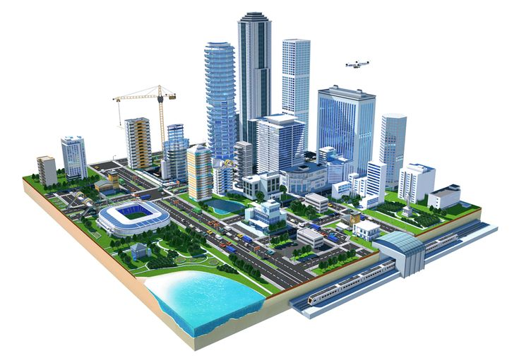

Internet of Things (IoT) untuk Kota Pintar
Transformasi Kehidupan Perkotaan
Kelompok 4
I Made Agus Rai Indra Buana (2429101031)
I Putu Candrawan (2429101032)
I Putu Agra Arimbawa (2429101033)
Ni Putu Fina Silviantari (2429101034)
I Nyoman Ari Arthasusila (2429101035)
Dewa Ketut Satriawan S. (2429101036)
I Gusti Putu Ananta Mahanata (2429101039)
I Putu Andika Putra (2429101040)
Mata Kuliah Kapita Selekta
Ilmu Komputer S2 - UNDIKSHA - 2025
Daftar Isi
- 1 Pengenalan IoT
- 2 Konsep Kota Pintar (Smart Cities)
- 3 Penerapan IoT dalam Kota Pintar
- 4 Studi Kasus: Implementasi Sukses
- 5 Teknologi Pendukung IoT
- 6 Tantangan dan Masa Depan
- 7 Kesimpulan
- 8 Referensi
Pengenalan Internet of Things (IoT)
Apa itu IoT?
- Jaringan perangkat fisik yang terhubung internet
- Memungkinkan pengumpulan dan pertukaran data tanpa intervensi manusia
- Dilengkapi dengan sensor, perangkat lunak, dan teknologi lainnya
"IoT adalah transformasi teknologi yang mengubah objek fisik menjadi ekosistem digital terhubung"
- IEEE IoT JournalKomponen Utama IoT
Sensor & Aktuator
Mengumpulkan data dan melakukan tindakan
Konektivitas
WiFi, Bluetooth, LPWAN, 5G
Platform Data
Penyimpanan dan analisis data
Antarmuka Pengguna
Aplikasi dan dasbor
Konsep Kota Pintar (Smart Cities)
Definisi Kota Pintar
Kota yang mengintegrasikan teknologi informasi dan komunikasi (TIK) untuk meningkatkan:
- Efisiensi operasional kota
- Kualitas layanan publik
- Kesejahteraan warga

Pilar Utama Kota Pintar
Smart Governance
Pemerintahan dan layanan publik
Smart Mobility
Transportasi dan lalu lintas
Smart Environment
Pengelolaan lingkungan dan energi
Smart Living
Keamanan dan kualitas hidup
Smart Economy
Inovasi ekonomi digital
Smart People
Pendidikan dan partisipasi warga
Penerapan IoT dalam Kota Pintar
Manajemen Transportasi Cerdas
- Pemantauan lalu lintas real-time
- Sistem parkir cerdas
- Transportasi umum terhubung
- Pengurangan kemacetan dan emisi
Pengelolaan Energi dan Lingkungan
- Smart grid dan meter pintar
- Pemantauan kualitas udara dan air
- Pengelolaan limbah cerdas
- Penghematan energi pada bangunan
Infrastruktur Publik Terhubung
- Pencahayaan jalan adaptif
- Pemantauan infrastruktur (jembatan, jalan)
- Pengelolaan air dan drainase
- Sistem peringatan dini bencana
Layanan Publik Digital
- Keamanan publik berbasis IoT
- Layanan kesehatan terhubung
- Sistem pendidikan interaktif
- E-governance dan partisipasi warga
Studi Kasus: Implementasi Sukses
Songdo, Korea Selatan
- Kota pintar yang dibangun dari awal (greenfield)
- Sistem pengelolaan limbah pneumatik tanpa truk sampah
- Jaringan sensor terpadu untuk monitoring lingkungan
- Penghematan energi 30% dibanding kota konvensional
Sumber: Jurnal Smart Cities, 2023
Barcelona, Spanyol
- Smart lighting menghemat €37 juta per tahun
- Sistem irigasi cerdas mengurangi penggunaan air 25%
- Sensor parkir mengurangi kemacetan hingga 30%
- Aplikasi warga untuk partisipasi dalam perencanaan kota
Sumber: IEEE Smart Cities Initiative, 2022
Jakarta Smart City, Indonesia
- Program CCTV terhubung untuk keamanan publik
- Aplikasi Qlue untuk pelaporan masalah perkotaan
- Sistem transportasi umum terintegrasi (JakLingko)
- Pengelolaan banjir berbasis IoT
Sumber: Jakarta Smart City Blueprint, 2022
Teknologi Pendukung IoT untuk Kota Pintar
Infrastruktur Konektivitas
- 5G: Konektivitas ultra-cepat & rendah latensi
- LPWAN (LoRaWAN, NB-IoT): Konektivitas jarak jauh, energi rendah
- Fiber Optic: Backbone infrastruktur digital
Analitik Data & AI
- Big Data Analytics: Pengolahan data masif dari sensor
- Machine Learning: Prediksi pola & anomali
- Digital Twin: Model virtual kota untuk simulasi
Edge Computing
- Pemrosesan data dekat dengan sumber
- Mengurangi latensi dan bandwidth
- Privasi dan keamanan data lebih terjamin
"Edge computing memungkinkan respons real-time dan mengurangi beban jaringan dalam ekosistem IoT kota pintar"
- Cisco Annual Internet ReportTantangan Implementasi IoT di Kota Pintar
Keamanan dan Privasi
- Kerentanan perangkat terhadap serangan cyber
- Perlindungan data pribadi warga
- Standarisasi keamanan yang belum matang
Teknologi dan Infrastruktur
- Interoperabilitas antar sistem
- Ketahanan dan skalabilitas jaringan
- Kebutuhan energi untuk perangkat IoT
Sosial dan Kebijakan
- Kesenjangan digital (digital divide)
- Regulasi dan tata kelola data
- Adopsi dan penerimaan masyarakat
Ekonomi dan Keberlanjutan
- Biaya investasi awal yang tinggi
- Model bisnis dan pengembalian investasi
- Keberlanjutan jangka panjang
Peluang dan Masa Depan
Tren Masa Depan
IoT + AI
Kecerdasan terdistribusi di kota
Digital Twin
Replika virtual kota untuk simulasi dan prediksi
Citizen-centric IoT
Partisipasi warga dalam pengembangan solusi
Circular Economy
IoT untuk ekonomi sirkuler dan keberlanjutan
Dampak Potensial
Pengurangan emisi karbon
Penghematan energi
Pengurangan waktu perjalanan
Peningkatan kualitas hidup
"Kota pintar berbasis IoT bukan sekadar tentang teknologi, tetapi tentang meningkatkan kualitas hidup warga"
- World Economic ForumKesimpulan
IoT menjadi tulang punggung transformasi kota konvensional menjadi kota pintar
Integrasi teknologi harus berpusat pada kebutuhan warga
Pendekatan holistik melibatkan aspek teknologi, sosial, dan kebijakan
Keberlanjutan menjadi faktor kunci keberhasilan jangka panjang
Indonesia memiliki potensi besar untuk adopsi IoT dalam pengembangan kota pintar

Referensi
- Zanella, A., et al. (2023). "Internet of Things for Smart Cities". IEEE Internet of Things Journal, 10(1), 22-32.
- World Economic Forum. (2022). "IoT Guidelines for Sustainability: Smart City Applications".
- Gartner Research. (2023). "Market Guide for Smart City IoT Platforms".
- Kementerian Komunikasi dan Informatika RI. (2022). "Roadmap IoT Nasional Indonesia 2020-2024".
- McKinsey Global Institute. (2024). "Smart Cities: Digital Solutions for a More Livable Future".
- Gunawan, H., & Suroso, J. (2023). "Implementasi IoT untuk Smart City di Indonesia: Tantangan dan Peluang". Jurnal Teknologi Informasi Indonesia, 8(2), 67-79.
- Cisco Annual Internet Report. (2023). "Edge Computing in Smart Cities Infrastructure".
- IEEE Smart Cities Initiative. (2022). "Barcelona: A Global Leader in Smart City Implementation".
- Jakarta Smart City. (2022). "Jakarta Smart City Blueprint 2022-2027".
Terima Kasih
Pertanyaan?
Kelompok 4
I Made Agus Rai Indra Buana (2429101031)
I Putu Candrawan (2429101032)
I Putu Agra Arimbawa (2429101033)
Ni Putu Fina Silviantari (2429101034)
I Nyoman Ari Arthasusila (2429101035)
Dewa Ketut Satriawan S. (2429101036)
I Gusti Putu Ananta Mahanata (2429101039)
I Putu Andika Putra (2429101040)
Mata Kuliah Kapita Selekta
Ilmu Komputer S2 - UNDIKSHA - 2025